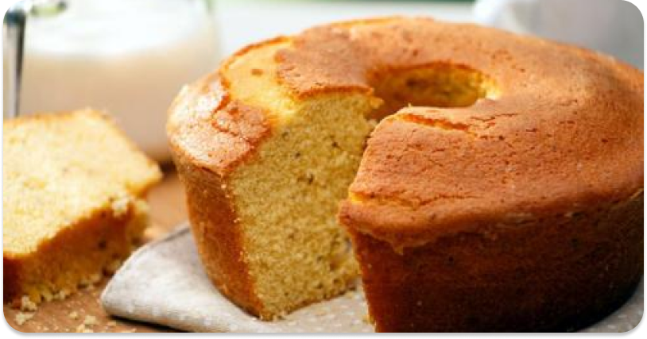

Bolo de
Fubá
Aquele bolo de fubá que algumas pessoas tão cansados de comer, ou não

Ingredientes
2 cenouras grandes (ou 2 xícaras de
chá de cenoura em cubos)
4 ovos
1 xícara de óleo
3 xícaras (chá) de farinha de trigo (sem fermento)
2 xícaras (chá) de açúcar
1 pitadinha de sal)
1 colher (sopa) de fermento em pó
Modo de Preparo
- Bata todos os ingredientes no liquidificador.
- Coloque em uma forma untada e enfarinhada.
- Leve ao forno aquecido e deixe assar por 40 minutos.
- To colocando mais coisa só pra preencher aqui mesmo.
- Só isso mesmo
- Só isso
- Só